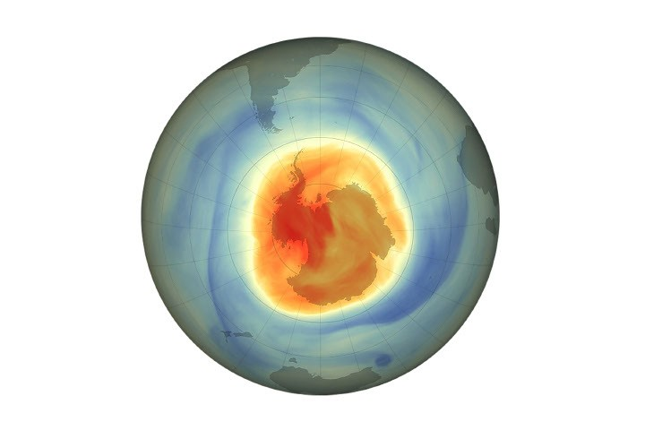

01
Frente fria derruba temperaturas no Brasil; veja onde vai fazer frio
Notícias ao Minuto Brasil · 09/11/2026 · 06:10 (Brasília)Fonte original ↗
 noticias.uol.com.brTrump anuncia possível reunião com Putin e Xi na Chinawww.msn.comGovernador de ilha no Japão pede revisão de acordo sobre tropas dos EUA após assassinatonoticias.uol.com.brNúmero de mortos em ataque saudita contra o Iêmen sobe para 44, afirmam houthis
noticias.uol.com.brTrump anuncia possível reunião com Putin e Xi na Chinawww.msn.comGovernador de ilha no Japão pede revisão de acordo sobre tropas dos EUA após assassinatonoticias.uol.com.brNúmero de mortos em ataque saudita contra o Iêmen sobe para 44, afirmam houthis noticias.uol.com.brUcrânia quer garantias contra nova invasão em negociações de pazNation ThailandIran formally announces removal of 2,000km guided missile range cap
noticias.uol.com.brUcrânia quer garantias contra nova invasão em negociações de pazNation ThailandIran formally announces removal of 2,000km guided missile range cap NilepostCaos transfronteiriço: como é que as economias de guerra ameaçam os países do Corno de África?
NilepostCaos transfronteiriço: como é que as economias de guerra ameaçam os países do Corno de África? BBC ScienceImpressão encomendada pela Nasa descoberta para exposição
BBC ScienceImpressão encomendada pela Nasa descoberta para exposição www.postcourier.com.pg15 jornalistas do Pacífico reportarão a COP31R7Como a poeira de Marte pode afetar o corpo dos astronautas, segundo cientistasCanal RuralOito módulos de uma estação científica são erguidos por pernas hidráulicas e rebocados sobre esquis para escapar das rachaduras no gelo antárticoDiplomacia BusinessEmirados Árabes Unidos e BID.AI discutem perspectivas de cooperação em tecnologia e inovaçãoO POVOTrump diz que 'estava brincando' quando ofereceu cargo de secretário de imprensa a Dana White
www.postcourier.com.pg15 jornalistas do Pacífico reportarão a COP31R7Como a poeira de Marte pode afetar o corpo dos astronautas, segundo cientistasCanal RuralOito módulos de uma estação científica são erguidos por pernas hidráulicas e rebocados sobre esquis para escapar das rachaduras no gelo antárticoDiplomacia BusinessEmirados Árabes Unidos e BID.AI discutem perspectivas de cooperação em tecnologia e inovaçãoO POVOTrump diz que 'estava brincando' quando ofereceu cargo de secretário de imprensa a Dana White www.msn.comIncêndio em prédio residencial deixa 14 mortos na ChinaBloomberg.comBruising New Zealand Electionwww.rfi.frPolônia: suspeito de ataque que deixou seis mortos em Cracóvia morre no hospitalA TARDEPEC da Segurança Pública: avanços e lacunas no combate à violência
www.msn.comIncêndio em prédio residencial deixa 14 mortos na ChinaBloomberg.comBruising New Zealand Electionwww.rfi.frPolônia: suspeito de ataque que deixou seis mortos em Cracóvia morre no hospitalA TARDEPEC da Segurança Pública: avanços e lacunas no combate à violência BBC AfricaQuénia apreende 454 kg de metanfetamina na repressão às drogasDiário da GuanabaraTensões no Oriente Médio e negociações globais movimentam comércio de petróleo e diplomacia internacionalNASA Breaking NewsAPOD: 2026, 9 de novembro – Rigel e a Nebulosa Cabeça de BruxaThe AustralianANZ warns big spending squeeze will spare no oneAsia Research News |Estudo liderado pela CityUHK revela a contínua perda de gelo na Antártica neste século, destacando a importância das reduções de emissões para mitigar os riscos costeirosEscudo DigitalUma fé, dois caminhos: o aprofundamento da divisão do IslãoPoder360Trump culpa política migratória por derrota: "Rigorosa demais"GZHCapital da Índia enfrenta poluição após fogos de artifício do DiwaliUOL NotíciasIsrael autoriza envio de cerca de 250 militares estrangeiros a Gaza
BBC AfricaQuénia apreende 454 kg de metanfetamina na repressão às drogasDiário da GuanabaraTensões no Oriente Médio e negociações globais movimentam comércio de petróleo e diplomacia internacionalNASA Breaking NewsAPOD: 2026, 9 de novembro – Rigel e a Nebulosa Cabeça de BruxaThe AustralianANZ warns big spending squeeze will spare no oneAsia Research News |Estudo liderado pela CityUHK revela a contínua perda de gelo na Antártica neste século, destacando a importância das reduções de emissões para mitigar os riscos costeirosEscudo DigitalUma fé, dois caminhos: o aprofundamento da divisão do IslãoPoder360Trump culpa política migratória por derrota: "Rigorosa demais"GZHCapital da Índia enfrenta poluição após fogos de artifício do DiwaliUOL NotíciasIsrael autoriza envio de cerca de 250 militares estrangeiros a Gaza BBC News BrasilAtirador mata 6 em praça no centro de Cracóvia, na Polônia, e morre após confronto com a políciaABNA EnglishAnálise / Paquistão, Síria, Arábia Saudita: um novo campo destinado à guerra no Iémen?GhanaSoccernetACON 2027 Qualifiers: CAF releases Matchday 3 and 4 fixtures
BBC News BrasilAtirador mata 6 em praça no centro de Cracóvia, na Polônia, e morre após confronto com a políciaABNA EnglishAnálise / Paquistão, Síria, Arábia Saudita: um novo campo destinado à guerra no Iémen?GhanaSoccernetACON 2027 Qualifiers: CAF releases Matchday 3 and 4 fixtures
NASA Breaking NewsOzone Hole Reaches Its 2026 MaximumRNZPacific Island teams fall short in RLWC semifinals despite historic campaignswww.chinadaily.com.cn43rd expedition marks Antarctic research pushMiddle East EyeMorning updateO presidente dos Estados Unidos, Donald Trump, disse no domingo (8) que pode se reunir com os presidentes da Rússia e da China na próxima semana para abordar o fim da guerra no Irã.Trump disse a repórteres que espera ter uma reunião com Xi Jinping, da

O número de mortos no ataque da Arábia Saudita contra a província de Sanaa, no Iêmen, subiu para 44, incluindo 21 crianças, informaram os houthis nesta segunda-feira (9) em seu canal de televisão."O balanço do massacre do inimigo saudita na região
As negociações de paz na Ucrânia previstas para esta semana, em Abu Dhabi, terão como prioridade as garantias de segurança.O que você precisa saberRepresentantes da Rússia, da Ucrânia e dos Estados Unidos devem se reunir por dois dias na capital dos Em

A exposição Pop Art no Cartwright Hall conta a história da Bienal Internacional de Gravura Britânica.
As vozes do Pacífico na 31ª Conferência das Partes da Convenção-Quadro das Nações Unidas sobre Alterações Climáticas (UN-FCCC) em Antalya, na Turquia, serão transmitidas às pessoas nas ilhas.
O primeiro dia de provas do Enem 2026, realizado este domingo (8), transcorreu sem grandes contratempos, informou o ministro da Educação, Leonardo Barchini, em coletiva de imprensa. No total, 68% dos inscritos no exame compareceram ao primeiro dia de prova. Notícias relacionadas: Veja a opinião dos alunos sobre tema da redação do Enem 2026. Professores avaliam tema da redação do Enem como relevante e acessível. Tema da redação do Enem é “Valorização do SUS como direito universal”. A edição deste ano também marcou maior participação de estudantes concluintes do ensino médio na rede pública. Foram mais de 1,9 milhão de inscritos, o que represen
O Palmeiras garantiu presença na final da Copa do Brasil neste domingo (8) ao derrotar o Vasco nos pênaltis por 5 a 4, no Estádio de São Januário, no Rio de Janeiro. Em desvantagem por ter perdido o jogo de ida por 1 a 0, o Cruzmatino foi incansável e arrancou a vitória por 2 a 1 nos 90 minutos iniciais, levando a definição da vaga para as penalidades. Aí, brilhou a estrela do goleiro Carlos Miguel que, com mais de dois metros de altura, defendeu duas cobranças do time carioca (Lescano e Andrés Goméz). Além de carimbar a vaga na final, o Verdão assegurou presença na Copa Libertadores de 2027. Pela segunda vez na história, a equipe paulista di
O suspeito do ataque a tiros que matou seis pessoas e deixou 15 feridos em Cracóvia morreu no hospital, informou a polícia da Polônia nesta segunda-feira (9). O homem, de 24 anos, havia sido baleado…
A polícia queniana disse que as investigações começaram depois que um suspeito importante foi preso na Tanzânia na semana passada.
APOD Science APOD APOD: 2026 9 de novembro –… Arquivo APOD de hoje Índice de envios Pesquisar Calendário RSS Educação Sobre Discutir APOD Astronomia Imagem do dia Descubra o cosmos! Cada dia é apresentada uma imagem ou fotografia diferente do nosso fascinante universo, juntamente com uma breve explicação escrita por um astrônomo profissional. Rigel e o [...]
ANZ alerta que grande aperto nos gastos não poupará ninguém
Estudo liderado pela CityUHK revela contínua perda de gelo na Antártica neste século, destacando a importância das reduções de emissões para mitigar os riscos costeiros Asia Research News |
Em pronunciamento à nação, na noite deste domingo (8), o presidente da República, Luiz Inácio Lula da Silva, agradeceu os votos na eleição deste ano, destacando a mobilização nas ruas, liderada pelas juventudes, e o esforço dos idosos. Reafirmou ainda compromissos de campanha, falou sobre a economia, a segurança pública e criticou a atuação das empresas de tecnologia, as chamadas Big Techs , durante as eleições. "É preciso construir pontes ao invés de muros", afirmou em tom conciliatório. Lula ressaltou que o próximo governo será marcado por mais dinamismo e capacidade de implementação das promessas de campanha. Em relação a economia reafirmo
Polícia também encontrou três corpos na casa do atirador, que foi descrito pelas autoridades como um cidadão polonês de 25 anos.
Análise / Paquistão, Síria, Arábia Saudita: um novo campo destinado à guerra no Iêmen? ABNA Inglês

Pelo menos seis pessoas morreram no tiroteio e três corpos de familiares do suspeito foram encontrados em sua casa.
O buraco na camada de ozônio ficou em sétimo lugar em área em 48 anos de monitoramento, mas não foi tão profundo quanto outros grandes buracos já registrados.
A 43ª equipe de expedição da China à Antártica partiu para a região polar no sábado, de acordo com o Ministério de Recursos Naturais.
Canadá dirige-se à cimeira climática da ONU na Turquia com finanças e transição de combustíveis fósseis na agenda CBC
Catar apresenta nova proposta enquanto os esforços diplomáticos EUA-Irã se intensificam İlke Haber Ajansı
Com as conversações anuais das Nações Unidas sobre o clima marcadas para começar esta semana, os defensores apelam a mudanças urgentes na forma como o financiamento climático é administrado, para que os mais afectados não sejam ainda melhorados por uma crise que não causaram.
De um navio congelado no gelo ártico, um aviso aos líderes mundiais: confie na ciência - Notícias da Nova Zelândia
Tayebwa insta os estados da OACPS a se unirem nas negociações com a União Europeia Nilepost

A travessia do Atlântico para as Ilhas Canárias espanholas continua perigosa para os migrantes que procuram uma vida melhor
O primeiro-ministro Shehbaz instrui o Ministério das Relações Exteriores a “aumentar a assistência humanitária” com urgência para Gaza Dawn, atingida pela chuva
ÁFRICA CDC SAÚDA A NOMEAÇÃO DO DR. MARK DYBUL COMO DIRETOR EXECUTIVO DO FUNDO GLOBAL E APELA POR UMA NOVA ERA DE PROPRIEDADE AFRICANA E SOBERANIA NA SAÚDE Home – África CDC
Endereço econômico para empresas Sydney Mirage News

O presidente disse ao chefe do Ultimate Fighting Championship para “por favor, aceite o cargo” em um post do Truth Social no sábado.
Todos os caminhos levam a Teerã: as 4 frentes de Israel aguardam a próxima virada www.israelhayom.com
Sharif do Paquistão critica a obstrução de Israel à ajuda à Agência de Notícias Gaza Mehr

Mais pesquisas ruins para o Partido Trabalhista à medida que os eleitores perdem a confiança em Albanese Crikey
Índia e Ilhas Salomão reafirmam compromisso de fortalecer os laços bilaterais IANS LIVE
Austrália dispensa teste de inglês para candidatos a visto de engajamento no Pacífico Tópicos principais
Sonha em ir para o espaço? NASA está procurando sua próxima geração de astronautas FOX Weather
Aliados do G7 avaliam o impacto dos resultados eleitorais dos EUA na Ucrânia e no Médio Oriente Médio Oriente Online
O PM Shehbaz orienta o MOFA a intensificar a ajuda humanitária a Gaza The Express Tribune
O Ministério da Saúde informou ter adquirido 25 mil doses da vacina contra a mpox. A remessa foi possível após negociações da pasta com o laboratório dinamarquês fabricante do imunizante para vender a quantidade máxima de doses ao Brasil. Com isso, o ministério conseguiu ampliar o envio de 5 mil para 20 mil doses, com entrega prevista nas próximas três semanas. De acordo com o ministério, as novas doses irão reforçar o estoque nacional. Nove unidades da Federação foram abastecidas com 3.650 doses, entre elas Rio de Janeiro, Ceará e Distrito Federal. Notícias relacionadas: Vacinação focada em grupos mais vulneráveis é eficaz contra mpox . São
A menos de três meses da posse dos parlamentares eleitos, que será no dia 1º de fevereiro de 2027, a oposição no Senado Federal já se articula para lançar candidaturas competitivas ao comando da Casa. O resultado das urnas fortaleceu o campo oposicionista no Senado , especialmente o Partido Liberal (PL), que terá a maior bancada, com 29 integrantes, e apoio de outras legendas alinhadas ao bolsonarismo, que tentarão fazer frente à tentativa de reeleição do atual presidente, Davi Alcolumbre (União-AP), que conta com o apoio do governo do presidente Luiz Inácio Lula da Silva e de sua base no Legislativo. Notícias relacionadas: Sem posição do Sen
Os EUA e o Irão estão a negociar discretamente enquanto o Médio Oriente continua tenso. Aqui está o que você deve saber CNN

Jensen Huang admitiu também ter sido “infiel” à mulher e afirma que irá cooperar com uma investigação de segurança.

Várias carruagens descarrilaram depois de dois comboios que viajavam no mesmo sentido terem caído perto da cidade de Gizé.
No domingo, a NASA anunciou a abertura de seu Desafio Estudantil da Base Lunar de US$ 1 milhão durante um evento MAX POWER no Complexo de Visitantes do Centro Espacial Kennedy, na Flórida. Como parte da Era de Ouro da Ciência, a competição convida equipes de estudantes de escolas secundárias e pós-secundárias dos EUA a contribuir com projetos para a Base Lunar. "Eram […]
Rádio Nova Zelândia enfrenta 58 cortes de empregos após estouro no orçamento de US$ 11,8 milhões Pacific Media Network
A última nomeação de Nigel Farage mostra que a Reforma está enfrentando uma questão crucial AOL.co.uk

A Nova Zelândia acaba de assistir às eleições gerais mais apertadas dos últimos anos, com os dois principais partidos empatados.
Regulamento sobre metano da UE: Por que todos estão esperando por verificadores independentes Tabela.Briefings
Taiwan critica a China por distorcer a resolução da ONU e reafirma a independência Lokmat Times

Por décadas, PT e MST foram as forças políticas dominantes em Pontão (RS), mas avanço do agronegócio e popularização de valores como o empreendedorismo mudaram a política local.
Índia se recupera enquanto Coreia do Sul, Japão e Taiwan agitam... Retorno de um mês do ETF da Índia atinge 12%
SpaceX planeja aposentar o Falcon 9 e mudar os lançamentos para a Starship DongA Science
Austrália descarta Labuschagne para a série de testes da Nova Zelândia Demokratis.co.id
G7 se reúne em Paris para avaliar possíveis mudanças na política de Trump sobre Ucrânia e Irã Chosunbiz
Investigação da ONU expõe treinamento nos Emirados Árabes Unidos e envio de mercenários colombianos para alimentar o genocídio no Sudão thecradle.co
Eleição 2026: Vencedores, Perdedores do Espaço e Qual o Próximo Espaço de Carga Útil
Trump enfrenta mudança na política externa após derrota eleitoral? Reunião ministerial do G7 mantém respostas news.sbs.co.kr
Ministério das Relações Exteriores da Federação Russa

APOD Science APOD APOD: 2026 8 de novembro –… Arquivo APOD de hoje Índice de envios Pesquisar Calendário RSS Educação Sobre Discutir APOD Astronomia Imagem do dia Descubra o cosmos! Cada dia é apresentada uma imagem ou fotografia diferente do nosso fascinante universo, juntamente com uma breve explicação escrita por um astrônomo profissional. Grande Meteoro Bola de Fogo […]
Mudança de regime no Irã: uma meta desejável, mas não necessariamente atingível www.inss.org.il